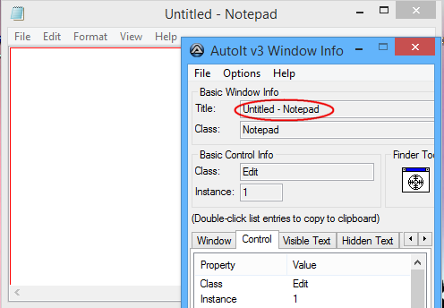
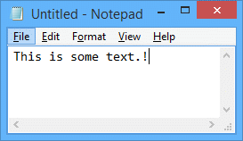
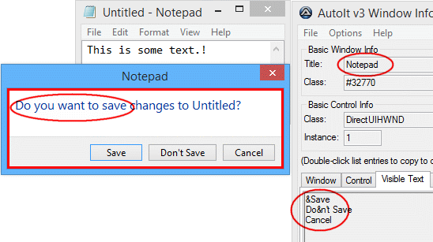

Этот урок объясняет, как автоматизировать открытие блокнота, автоматически ввести текст и закрыть блокнот. Предполагается, что вы уже знакомы с созданием и запуском скриптов AutoIt как показано в уроке Hello World.
Сначала создайте пустой скрипт с именем npad.au3, затем отредактируйте файл (используя блокнот или SciTE, как вам угодно).
В первую очередь нужно узнать имя исполняемого файла блокнота. Это notepad.exe – вы можете получить эту информацию, посмотрев свойства значка ярлыка блокнота в меню "Пуск". Для запуска блокнота используем функцию AutoIt Run. Эта функция просто запускает заданный исполняемый файл и затем продолжает выполнение скрипта.
Введите первую строку скрипта:
Run("notepad.exe")
Запустите скрипт – если всё пройдёт хорошо, откроется новый экземпляр блокнота.
При автоматизации приложений AutoIt может проверить заголовок окна, чтобы узнать, с каким окном работать. У блокнота заголовок окна – это Untitled - Notepad (Без названия - блокнот). AutoIt чувствителен к регистру при использовании заголовков окна, поэтому вы должны получить заголовок точно – лучший способ сделать это – использовать AutoIt v3 Window Info. Запустите AutoIt v3 Window Info из Start Menu \ AutoIt v3 \ AutoIt Window Info (Меню Пуск \ AutoIt v3 \ AutoIt Window Info).
С открытым инструментом Info нажмите на только что открытое окно блокнота, чтобы активировать его; инструмент Info выдаст информацию о нём. Информация, которая нас интересует – это заголовок окна title.

Выделите заголовок в окне AutoIt Info Tool и нажмите CTRL-C, чтобы скопировать его в буфер обмена – затем мы можем вставить заголовок в наш скрипт без опасения ошибиться в написании.
После запуска блокнота нужно дождаться, пока он появится и станет активным, прежде чем отправлять какие-либо нажатия клавиш. Можно дождаться окна, используя функцию WinWaitActive. Большинство функций, связанных с окнами в AutoIt, принимают заголовок окна title в качестве параметра.
Введите следующее как вторую строку в скрипте (используйте CTRL-V или Edit\Paste, чтобы вставить заголовок окна из буфера обмена).
WinWaitActive("Untitled - Notepad")
После того как окно блокнота видимо, мы хотим ввести текст. Это делается с помощью функции Send.
Добавьте эту строку в наш скрипт.
Send("This is some text.")
Весь скрипт будет выглядеть так:
Run("notepad.exe")
WinWaitActive("Untitled - Notepad")
Send("This is some text.")
Закройте экземпляр блокнота, который мы ранее открыли (вам нужно будет делать это каждый раз, когда вы запускаете скрипт, иначе у вас будет много копий, запущенных одновременно!). Запустите скрипт.
Вы должны увидеть, как откроется блокнот, а затем текст волшебным образом появится!

Затем мы хотим закрыть блокнот, мы можем сделать это с помощью функции WinClose.
WinClose("Untitled - Notepad")
Когда блокнот попытается закрыться, вы получите сообщение с просьбой сохранить изменения. Используйте Window Info Tool, чтобы получить сведения о всплывшем диалоговом окне, чтобы мы могли ответить на него :)

Итак, мы добавляем строку для ожидания появления этого диалогового окна (мы также будем использовать текст окна, чтобы сделать функцию более надёжной и отличить это новое окно от оригинального окна блокнота):
WinWaitActive("Notepad", "Save")
Затем мы хотим автоматически нажать Alt-N, чтобы нажать кнопку No/Don't save (Нет/Не сохранять) (подчёркнутые буквы в окнах обычно указывают, что вы можете использовать клавишу ALT и эту букву как сочетание клавиш). В функции Send для отправки клавиши ALT мы используем ! .
Send("!n")
Наш полный скрипт теперь выглядит так:
Run("notepad.exe")
WinWaitActive("Untitled - Notepad")
Send("This is some text.")
WinClose("Untitled - Notepad")
WinWaitActive("Notepad", "Save")
; WinWaitActive("Notepad", "Do you want to save") ; When running under Windows XP
Send("!n")
Запустите скрипт и вы увидите, как откроется блокнот, появится текст и затем закроется! Вы должны быть в состоянии использовать методы, изученные в этом уроке, для автоматизации многих других приложений.